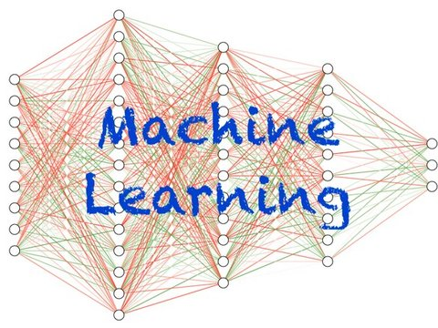
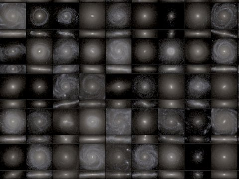
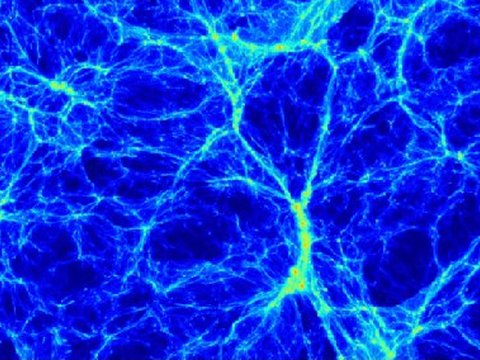
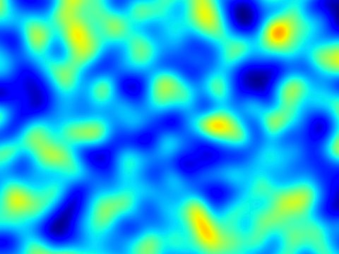

Machine Learning & AI Simulation-based inference, geometric deep learning, and AI agents for scientific discovery. Quijote
88,000 N-body simulations to quantify the information content of cosmological observables and train machine learning models.
Quijote
88,000 N-body simulations to quantify the information content of cosmological observables and train machine learning models.
 CAMELS
More than 17,000 hydrodynamic and N-body simulations to train machine learning models in cosmology and astrophysics.
CAMELS
More than 17,000 hydrodynamic and N-body simulations to train machine learning models in cosmology and astrophysics.

DREAMS Simulations of cosmological volumes, Milky Way-like galaxies and dwarf galaxies to shed light on the nature of dark matter with AI.
Neutrinos The impact of massive neutrinos on cosmological observables, studied with N-body and hydrodynamic simulations.
21cm Intensity Mapping Modelling neutral hydrogen and 21cm intensity mapping in the post-reionization Universe.Other topics I have worked on: warm dark matter, baryon acoustic oscillations, the Lyα forest, initial conditions for numerical simulations, redshift-space distortions, the kinetic Sunyaev-Zeldovich effect, and modified gravity.